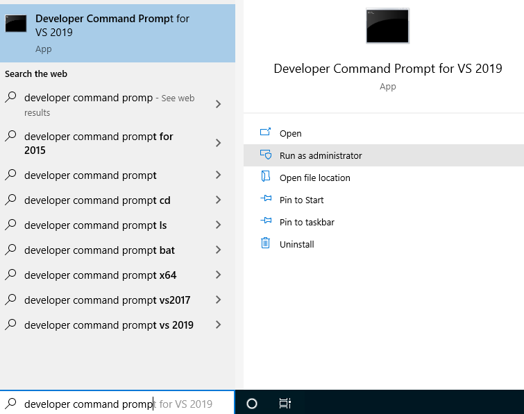

These instructions are designed for Visual Studio 2019 on Windows 10. If you're using different versions, you may have to modify or add steps to the process.
Open up 'Tactile\Installation\1. Redist'.
Attempt to install dotNetFx40_Full_setup.exe. It apparently comes pre-installed on Windows 10, and if already installed it will let you know.
Install xnafx40_redist.msi.
Install oalinst.exe.
Next open 'Tactile\Installation\2. VS'.
Run vs_Community2019.exe. You'll need an internet connection to download the installation files.
Select '.NET desktop development' under Desktop & Mobile, then begin installation.
Now open 'Tactile\Installation\3. XNA GS'.
Install DirectX/DXSETUP.exe.
Install XNA Game Studio Platform Tools.msi.
Install XNA Game Studio Shared.msi.
XNA doesn't natively support the most recent versions of Visual Studio, so the remaining steps are to make them compatible.
Open '4. XNA Game Studio 4.0.vsix' to add XNA templates and support to newer versions of Visual Studio. Select the version of Visual Studio you're using in the dialog box.
If it says it's incompatible, hit 'Yes' anyway.
You now need to copy XNA files, for newer versions of VS to recognize them. Running '4. Copy XNA Files.bat' should open the folders you need automatically.
If not, the folders are:
- The MSBuild location that has the XNA files, default 'C:\Program Files (x86)\MSBuild\Microsoft'
- VS's MSBuild folder, default 'C:\Program Files (x86)\Microsoft Visual Studio\2019\Community\MSBuild\Microsoft'.
Copy the 'XNA Game Studio' folder from the first to the second.
Provide admin privileges when prompted
You next may need to register a dll to avoid some errors. These directions are derived from http://flatredball.com/visual-studio-2017-xna-setup/.
Run 'Developer Command Prompt for VS 2019' as an administrator.

Enter the command 'cd "C:\Program Files (x86)\Microsoft Visual Studio\2019\Community\MSBuild\Current\Bin"'. This is a subfolder of the location you copied files into above.
Enter the command 'gacutil /i Microsoft.Build.Framework.dll'.
You now have everything you need to program in C# and work with XNA installed.
You can now run the Tactile Core Editor and create a new project.
Visit the Tactile GitHub page if you need more information.